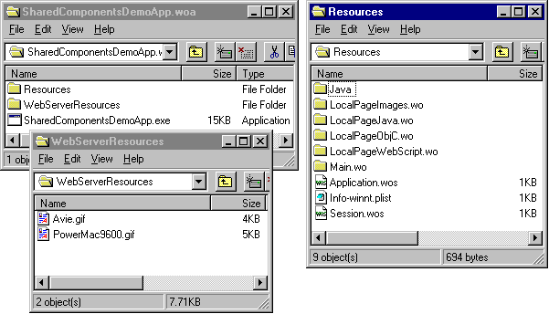

PATH
Documentation > WebObjects 4.5 >
Tools and Techniques
The Application Wrapper
When you build your project, Project Builder creates an application wrapper
, which is a folder whose name is the project name plus the extension .woa
.

The application wrapper has a structure similar to that of a framework. It consists of the following:
-
The executable application.
-
The application's resources.
These include the application's components as well as other files that are needed by your application at run time.
-
The application's web server resources.
When you build and install your application, Project Builder copies all the files from your Web Server Resources suitcase to a folder called WebServerResources inside the application wrapper. If you have client-side Java components in your project, these are also copied to the WebServerResources folder.
© 1999 Apple Computer, Inc. – (Last Updated July 27 99)